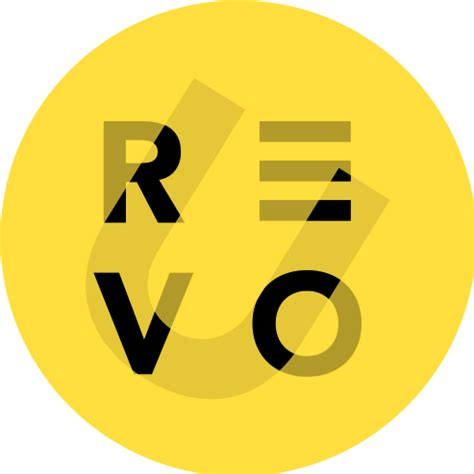

RevoU ini adalah sekolah online (EdTech) yang membekali para murid dengan keterampilan digital yang lagi in-demand di zaman industri teknologi 4.0 saat ini. RevoU fokus pada pengembangan keterampilan teknis dan praktis dengan kurikulum yang dirancang berdasarkan kebutuhan industri terkini, melibatkan mentor-mentor yang berpengalaman di berbagai bidang.

Minicourse Data Analytics di RevoU adalah pelatihan singkat yang dirancang untuk membekali peserta dengan keterampilan dasar yang diperlukan untuk menjadi seorang Data Analyst. Pelatihan ini mencakup pengenalan tentang pengolahan data, eksplorasi data, serta analisis data menggunakan alat-alat seperti Excel/Google Sheets, SQL, dan Python. Selain itu, peserta juga diajarkan bagaimana membuat visualisasi data yang efektif dan memberikan insight yang mendalam bagi pengambilan keputusan bisnis.
Melalui minicourse ini, saya berhasil menguasai dasar-dasar analisis data dan memahami bagaimana data dapat digunakan untuk mengidentifikasi tren, membuat prediksi, serta memberikan solusi berdasarkan data.